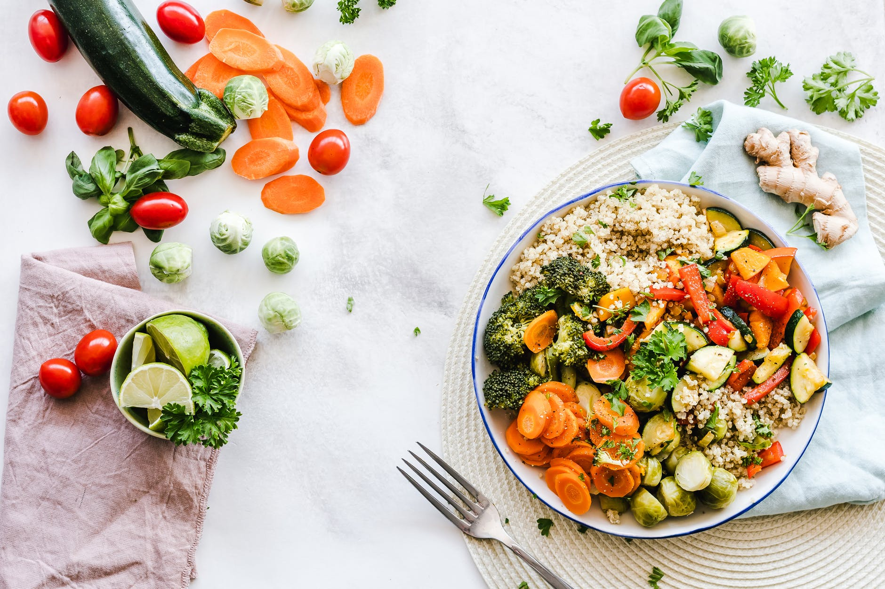

Moussaka is arguably the most famous Greek dish. It is served in every Greek taverna and is the dish of choice for a large family gathering and special occasions. Moussaka is a delicious eggplant, potato and mince meat casserole topped with a deliciously creamy and cheesy béchamel sauce.
A hamburger (or burger for short) is a food consisting of fillings —usually a patty of ground meat, typically beef—placed inside a sliced bun or bread roll. Hamburgers are often served with cheese, lettuce, tomato, onion, pickles, bacon, or chilis; condiments such as ketchup, mustard, mayonnaise, relish, or a "special sauce", often a variation of Thousand Island dressing; and are frequently placed on sesame seed buns. A hamburger topped with cheese is called a cheeseburger.
Come for the often-imitated, never-duplicated Cheddar Bay Biscuits. Stay for the Ultimate Feast, Red Lobster's fan-favorite entree. In this case, "feast" is not hyperbole: It's a platter heaped with tender Maine lobster tail, steamed North American snow crab legs and garlic shrimp scampi — in addition to butterflied, hand-breaded, golden fried shrimp. Remember to save room for the parade of all-included salad, coleslaw and biscuits.